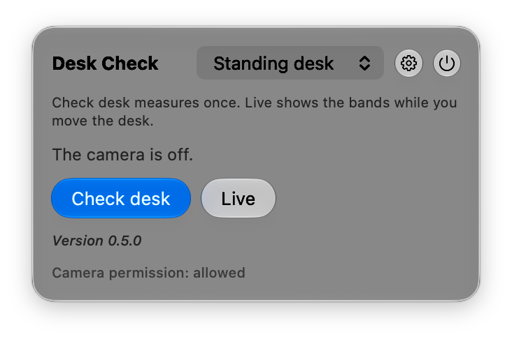
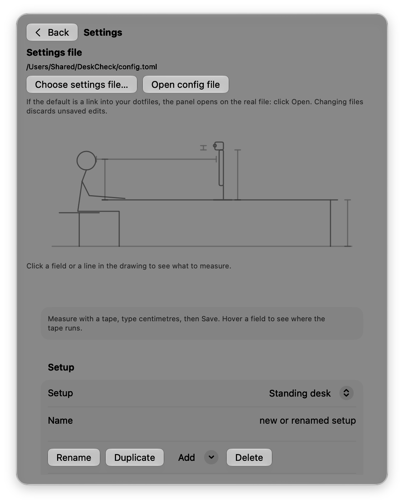

Your camera, kept short and kept local
The camera runs only during a check or Live. Don't take our word for it; read the permissions back yourself:
codesign -d --entitlements - "$(brew --prefix)/opt/desk-check/DeskCheck.app"
How it works
Check desk
The camera opens for about two seconds, finds your eyes and gives one sentence per adjustment, such as “Screen: lower 8 cm.”
Live
Keep the camera on while you crank the desk. A green, amber or red row shows the centimetres still to move.
Remember sit and stand
Presets keep the heights you read off the desk leg and confirm the view matches when you return. That is your undo and redo.




Early, and already useful
Desk Check is early. This is general guidance, not medical advice.
In place:
- Tape measurements per setup, for accurate readings.
- Webcam calibration for tilt and field of view.
- A choice, per setup, of what can move.
- Settings in a commented TOML file you can keep in your dotfiles.
Not yet: chair advice, and switching setup on lid close.
Install
Requires macOS 14 or later on Apple silicon. Homebrew builds the app on your Mac with Apple's command line tools; Xcode and a developer account are not needed.
After each brew upgrade, run desk-check again to replace the running copy. macOS asks for the camera once more, because the permission is tied to the exact build.